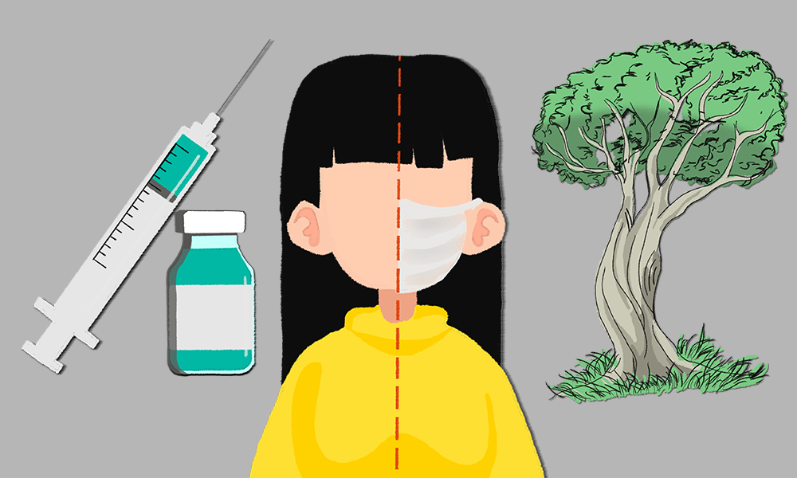
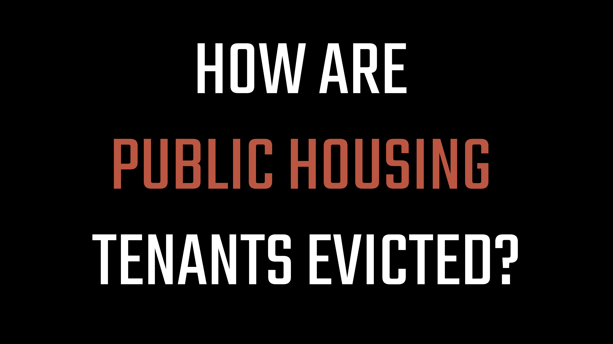

PBS News Rebrand
What I did: Created wireframes and prototypes for site layouts; designed new
templates for web, social, and video content; oversaw asset distribution across broadcast and
digital teams.
What I used: Figma, Illustrator, Photoshop, HTML, CSS, GitHub, WordPress, OneDrive.

Smart Shopping Quiz
What I did: Designed, prototyped, and developed an interactive quiz web page;
created illustrations for interactive assets.
What I used: Figma, Illustrator, Procreate, HTML, CSS, JavaScript, GitHub,
WordPress.

PBS News Data Visualizations Collection
What I did: Produced interactive, static, and animated data visualizations;
collaborated with reporters and editors; aggregated and verified data.
What I used: Datawrapper, Carto, Illustrator, After Effects, Excel, Google Sheets,
R.

PBS News Graphics Collection
What I did: Produced news graphics for PBS News’ website and social platforms;
created and managed graphic templates.
What I used: Illustrator, Photoshop, Figma, OneDrive.
2024 Primary and Caucus Elections
What I did: Wireframed and prototyped pages to host Associated Press graphics for
live national and state election results, a delegate tracker, a 2024 election calendar, and all
election-related stories; collaborated with the social team to produce winner graphics after race
calls.
What I used: Figma, WordPress, Illustrator, HTML, GitHub.

2022 Midterm Election Coverage
What I did: Designed the election denier tracker (classifying figures as deniers,
doubters, or defenders); co-authored an election guide newsletter; wrote two data-driven stories on
the role of secretaries of state in elections and how our map can identify who runs elections in
your state.
What I used: Datawrapper, Figma, Illustrator, Mailchimp, WordPress.

Elaine Massacre Mini Documentary
What I did: Integrated archival materials, custom illustrations, audio and video
interviews, data visualizations, and motion graphics into a cohesive mini-documentary.
What I used: After Effects, Premiere, Illustrator, Photoshop, Procreate, Carto,
Datawrapper.
Awards: SPJ Best Use of Multimedia, Festival of Media Arts Award of Excellence.

Printing Hate Website
What I did: Designed project branding and developed the site infrastructure.
What I used: HTML, CSS, WordPress, XD, Illustrator, Photoshop.
Awards: Online Journalism Awards Medal, NLA Innovator of the Year, SPJ Award for
Collaborative Journalism.

Mega Billions Data Visualizations
What I did: Created visualizations on the history of lotteries and the most popular
types of lottery games.
What I used: Datawrapper, Illustrator, Procreate.

Goucher Poll Quiz
What I did: Illustrated images to accompany each poll question.
What I used: Illustrator, Photoshop, Procreate.

Nowhere To Go Website
What I did: Designed project branding, developed the site infrastructure, and
produced stories and data visualizations.
What I used: HTML, CSS, WordPress, XD, Photoshop, Datawrapper.
Awards: SPJ Award for Collaborative Journalism.

Public Housing Motion Graphic
What I did: Illustrated and animated the process of how public housing tenants are
evicted.
What I used: After Effects, Premiere, Illustrator, Photoshop, YouTube.

Evictions Motion Graphic
What I did: Illustrated and animated how individuals can be evicted and how pandemic
eviction moratoria impacted them.
What I used: After Effects, Premiere, Illustrator, Photoshop, YouTube.
PBS NEWS REBRAND
Prior to the PBS
News rebrand in June, our team collaborated with the design agency Upstatement to create a new
design library and website UI that is modern and fresh while prioritizing the needs of our
digital audience. Throughout the rebranding process, I wireframed and prototyped site page layouts, designed
new templates for our web, social and video content, and oversaw the distribution of our design library
materials across our broadcast and digital teams.
üíª Figma, Illustrator, HTML, CSS, GitHub, WordPress
2024 Primary and Caucus Elections
Ahead of the already contentious presidential election in November, I
worked with the News Hour Product Team to design and develop a hub
for coverage about this year's primaries
and caucuses. The pages host Associated Press graphics for live national and state results, a delegate tracker, a 2024 election calendar and all election-focused stories from our
correspondents and producers. I also work with the News Hour social team to produce winner graphics after a race call.
üíª Figma, WordPress, Illustrator, HTML, GitHub
PBS NEWS DESIGN + GRAPHICS
I contribute a variety of
designs and graphics for the PBS News website and social media platforms. Click the image above to view
all of my
published graphics. In addition to these published graphics, I am actively developing new designs with our
software engineering team to update our website and newsletters.
üíª Illustrator, Photoshop, Figma, Mailchimp
PBS NEWS DATA VISUALIZATIONS
I produce interactive, still,
and animated data visualizations for the PBS News website, social media platforms, and digital video
stories. I also
collaborate with reporters to aggregate and verify data for orignal stories. Click the image above to view
all of my published data-related work.
üíª After Effects, Datawrapper, Carto, Illustrator, Excel
Quiz: Are you a smart shopper?
As food prices have
risen due to factors such as inflation, I worked
with members of the News Hour digital team to develop an interactive web page where users can learn how to
best shop on a budget, then take our quiz to test their skills. The interactive led our site for engagement
time on a single page during the week following publication. It was also featured on our broadcast program.
üíª HTML, JavaScript, SaaS, GitHub, Figma, WordPress
2022 MIDTERM ELECTION
For the 2022 Midterm elections, my projects focused on candidates that
would have influence or control over elections and whether our
team classified them as an election denier,
doubter or defender. I contributed to the design of our election results pages as well as an
election
guide newsletter.
I also wrote two data-driven stories on how
secretaries of state
affect elections and how you can use
our map to identify
who runs elections in your state.
üíª Datawrapper, Figma, Illustrator, Mailchimp, WordPress
ELAINE MASSACRE MINI DOCUMENTARY
I worked with Nick McMillan to develop this mini documentary on the
Elaine Massacre.
Accompanied with the article, the documentary explains the economic motives behind this massacre and how
white-owned newspapers fueled the violence. We combined archives, custom illustrations, interviews, data
visualizations, and motion graphics to tell this story.
üèÖAwards:
- Society of Professional Journalists Region 2 Mark of
Excellence: Best Use of Multimedia
- BEA Festival of Media Arts Award
of Excellence
üíª After Effects, Premiere, Illustrator, Photoshop, Procreate, Carto,
Script
development
PRINTING HATE WEBSITE
Printing Hate is an investigation into how white-owned newspapers have
aided and
abetted
lynchings since 1865. In partnership with the Howard Center at the University of Maryland and five HBCUs, I
–
along with the design team – developed the site and project branding from scratch.
üèÖAwards:
- Online Journalism Awards Winner;
"Student Team" category
- Investigative Reporters & Editors Medal, Award; "Student Large"
category
- NLA Punch Sulzberger Innovator of
the Year
- Society of Professional Journalists 2021
Sigma Delta Chi Award for Collaborative Journalism
üíª HTML, CSS, WordPress, XD, Illustrator, Photoshop
MEGA BILLIONS DATA VISUALIZATIONS
Mega billions is a Howard Center investigation which conducted a
first-of-its-kind analysis of mobile-phone location data to prove that the majority of customers at lottery
retailers come from nearby neighborhoods and, using census data, that those neighborhoods are
disproportionately home to Black, Hispanic and lower-income people. I produced visualizations on the history
of lottery creation and the most popular type of games.
üíª Datawrapper, Illustrator, Procreate
GOUCHER POLL QUIZ
The Goucher College Poll focuses on the opinions of Maryland residents,
and our team
at
CNS created an interactive quiz to tell the story on the findings. I created the digital illustrations to
accompany each question.
üíª Illustrator, Photoshop, Procreate
NOWHERE TO GO WEBSITE
Nowhere To Go is an investigation into the impact of homelessness and
the threat of
homelessness posed by the pandemic. In partnership with the Howard Center at the University of Maryland and
six
universities across America, our design team produced stories and data visualizations for the site.
üèÖAward: Society of Professional Journalists 2020
Sigma Delta Chi Award for Collaborative Journalism
üíª HTML, CSS, WordPress, XD, Photoshop, Datawrapper
PUBLIC HOUSING MOTION GRAPHIC
I created this motion graphic to demonstrate how public housing tenants
are evicted.
As a
part of the public housing installment of Nowhere To Go, the graphic breaks down the public housing eviction
process in Minneapolis.
üíª After Effects, Premiere, Illustrator, Photoshop, Script development,
YouTube
EVICTIONS MOTION GRAPHIC
I created this motion graphic to demonstrate how a person can end up
evicted. As a
part
of the evictions installment of Nowhere To Go, the graphic breaks down the eviction process in Oklahoma, a
state
that did not ban evictions during the initial months of the pandemic.
üíª After Effects, Premiere, Illustrator, Photoshop, Script development,
YouTube